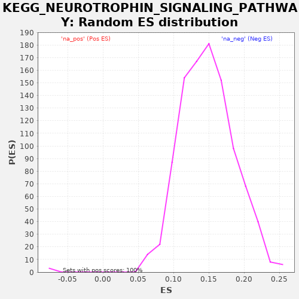

| | | Dataset | drug_embeddings_gsea |
| Phenotype | NoPhenotypeAvailable |
| Upregulated in class | na_neg |
| GeneSet | KEGG_NEUROTROPHIN_SIGNALING_PATHWAY |
| Enrichment Score (ES) | -0.50424975 |
| Normalized Enrichment Score (NES) | -6.3461156 |
| Nominal p-value | 0.0 |
| FDR q-value | 0.0 |
| FWER p-Value | 0.0 |
Table: GSEA Results Summary
 Fig 1: Enrichment plot: KEGG_NEUROTROPHIN_SIGNALING_PATHWAY
Fig 1: Enrichment plot: KEGG_NEUROTROPHIN_SIGNALING_PATHWAY
Profile of the Running ES Score & Positions of GeneSet Members on the Rank Ordered List
| PROBE | GENE SYMBOL | GENE_TITLE | RANK IN GENE LIST | RANK METRIC SCORE | RUNNING ES | CORE ENRICHMENT | | 1 | IRAK3 | | | 4431 | 0.920 | -0.2887 | No |
| 2 | CALML3 | | | 4454 | 0.919 | -0.2750 | No |
| 3 | CAMK2B | | | 5208 | 0.880 | -0.3120 | No |
| 4 | PRDM4 | | | 5697 | 0.854 | -0.3313 | No |
| 5 | ZNF274 | | | 6295 | 0.826 | -0.3586 | No |
| 6 | ARHGDIB | | | 6529 | 0.814 | -0.3611 | No |
| 7 | PIK3R5 | | | 7260 | 0.776 | -0.3983 | No |
| 8 | NTF3 | | | 7591 | 0.757 | -0.4084 | No |
| 9 | SH2B3 | | | 7765 | 0.748 | -0.4078 | No |
| 10 | CALML5 | | | 8273 | 0.717 | -0.4307 | No |
| 11 | NGF | | | 8612 | 0.699 | -0.4423 | No |
| 12 | SHC4 | | | 8929 | 0.681 | -0.4527 | No |
| 13 | CAMK2G | | | 9051 | 0.674 | -0.4498 | No |
| 14 | NTF4 | | | 9085 | 0.671 | -0.4410 | No |
| 15 | KIDINS220 | | | 9197 | 0.665 | -0.4375 | No |
| 16 | MAGED1 | | | 9754 | 0.628 | -0.4653 | No |
| 17 | SOS2 | | | 9840 | 0.622 | -0.4608 | No |
| 18 | CALML6 | | | 10266 | 0.592 | -0.4801 | No |
| 19 | NFKBIE | | | 10487 | 0.589 | -0.4855 | No |
| 20 | FRS2 | | | 10539 | 0.588 | -0.4792 | No |
| 21 | MAPK7 | | | 10588 | 0.587 | -0.4728 | No |
| 22 | IRAK2 | | | 11048 | 0.579 | -0.4946 | Yes |
| 23 | SORT1 | | | 11095 | 0.578 | -0.4882 | Yes |
| 24 | NTRK3 | | | 11196 | 0.576 | -0.4855 | Yes |
| 25 | AKT3 | | | 11209 | 0.576 | -0.4768 | Yes |
| 26 | IRS4 | | | 11282 | 0.575 | -0.4722 | Yes |
| 27 | PIK3CD | | | 11299 | 0.574 | -0.4638 | Yes |
| 28 | SH2B2 | | | 11339 | 0.573 | -0.4569 | Yes |
| 29 | SH2B1 | | | 11347 | 0.573 | -0.4479 | Yes |
| 30 | RPS6KA6 | | | 11467 | 0.572 | -0.4466 | Yes |
| 31 | CAMK2D | | | 11480 | 0.571 | -0.4379 | Yes |
| 32 | PIK3CG | | | 11617 | 0.568 | -0.4378 | Yes |
| 33 | PIK3CB | | | 11808 | 0.564 | -0.4415 | Yes |
| 34 | CAMK2A | | | 11862 | 0.563 | -0.4358 | Yes |
| 35 | RPS6KA4 | | | 12020 | 0.559 | -0.4373 | Yes |
| 36 | NTRK1 | | | 12052 | 0.558 | -0.4302 | Yes |
| 37 | MAPK11 | | | 12157 | 0.556 | -0.4281 | Yes |
| 38 | NGFR | | | 12223 | 0.554 | -0.4234 | Yes |
| 39 | MAP2K5 | | | 12361 | 0.551 | -0.4236 | Yes |
| 40 | SOS1 | | | 12466 | 0.549 | -0.4217 | Yes |
| 41 | RAPGEF1 | | | 12544 | 0.546 | -0.4179 | Yes |
| 42 | CAMK4 | | | 12555 | 0.546 | -0.4095 | Yes |
| 43 | NTRK2 | | | 12596 | 0.545 | -0.4032 | Yes |
| 44 | NFKBIB | | | 12628 | 0.544 | -0.3963 | Yes |
| 45 | NRAS | | | 12693 | 0.541 | -0.3917 | Yes |
| 46 | MAP2K7 | | | 12723 | 0.541 | -0.3848 | Yes |
| 47 | IRAK1 | | | 12797 | 0.538 | -0.3808 | Yes |
| 48 | SHC2 | | | 13026 | 0.529 | -0.3877 | Yes |
| 49 | PLCG2 | | | 13114 | 0.526 | -0.3850 | Yes |
| 50 | BDNF | | | 13121 | 0.526 | -0.3767 | Yes |
| 51 | IRAK4 | | | 13151 | 0.524 | -0.3699 | Yes |
| 52 | RPS6KA2 | | | 13396 | 0.513 | -0.3782 | Yes |
| 53 | RHOA | | | 13398 | 0.513 | -0.3697 | Yes |
| 54 | MAPK10 | | | 13440 | 0.511 | -0.3641 | Yes |
| 55 | SHC3 | | | 13464 | 0.509 | -0.3572 | Yes |
| 56 | MAPK12 | | | 13491 | 0.507 | -0.3506 | Yes |
| 57 | RIPK2 | | | 13494 | 0.507 | -0.3423 | Yes |
| 58 | CSK | | | 13497 | 0.506 | -0.3340 | Yes |
| 59 | RPS6KA3 | | | 13548 | 0.503 | -0.3291 | Yes |
| 60 | RAP1A | | | 13558 | 0.503 | -0.3214 | Yes |
| 61 | IRS2 | | | 13605 | 0.499 | -0.3163 | Yes |
| 62 | MAP2K2 | | | 13634 | 0.498 | -0.3099 | Yes |
| 63 | PIK3CA | | | 13636 | 0.498 | -0.3018 | Yes |
| 64 | RAC1 | | | 13657 | 0.496 | -0.2949 | Yes |
| 65 | PSEN1 | | | 13664 | 0.495 | -0.2871 | Yes |
| 66 | RPS6KA5 | | | 13683 | 0.495 | -0.2801 | Yes |
| 67 | MAPK13 | | | 13685 | 0.495 | -0.2720 | Yes |
| 68 | RAP1B | | | 13726 | 0.491 | -0.2666 | Yes |
| 69 | FOXO3 | | | 13751 | 0.490 | -0.2601 | Yes |
| 70 | MAP3K1 | | | 13772 | 0.488 | -0.2534 | Yes |
| 71 | ARHGDIA | | | 13853 | 0.482 | -0.2509 | Yes |
| 72 | MAPKAPK2 | | | 13854 | 0.482 | -0.2429 | Yes |
| 73 | AKT2 | | | 13873 | 0.480 | -0.2362 | Yes |
| 74 | PLCG1 | | | 13876 | 0.480 | -0.2284 | Yes |
| 75 | ATF4 | | | 13944 | 0.473 | -0.2251 | Yes |
| 76 | MAP3K3 | | | 13962 | 0.471 | -0.2185 | Yes |
| 77 | PIK3R3 | | | 13963 | 0.471 | -0.2107 | Yes |
| 78 | PIK3R2 | | | 13979 | 0.469 | -0.2039 | Yes |
| 79 | MAP3K5 | | | 14033 | 0.466 | -0.1998 | Yes |
| 80 | BRAF | | | 14075 | 0.460 | -0.1950 | Yes |
| 81 | CDC42 | | | 14167 | 0.446 | -0.1939 | Yes |
| 82 | TP73 | | | 14171 | 0.446 | -0.1867 | Yes |
| 83 | HRAS | | | 14175 | 0.445 | -0.1795 | Yes |
| 84 | RPS6KA1 | | | 14188 | 0.443 | -0.1730 | Yes |
| 85 | NFKBIA | | | 14190 | 0.442 | -0.1657 | Yes |
| 86 | BAD | | | 14218 | 0.438 | -0.1603 | Yes |
| 87 | YWHAH | | | 14225 | 0.437 | -0.1535 | Yes |
| 88 | IRS1 | | | 14228 | 0.436 | -0.1464 | Yes |
| 89 | YWHAG | | | 14333 | 0.416 | -0.1466 | Yes |
| 90 | FASLG | | | 14343 | 0.414 | -0.1404 | Yes |
| 91 | MAPK9 | | | 14388 | 0.405 | -0.1367 | Yes |
| 92 | TRAF6 | | | 14397 | 0.402 | -0.1305 | Yes |
| 93 | IKBKB | | | 14402 | 0.399 | -0.1242 | Yes |
| 94 | KRAS | | | 14429 | 0.393 | -0.1195 | Yes |
| 95 | CRKL | | | 14446 | 0.386 | -0.1142 | Yes |
| 96 | PRKCD | | | 14455 | 0.382 | -0.1084 | Yes |
| 97 | SHC1 | | | 14470 | 0.375 | -0.1031 | Yes |
| 98 | MAPK3 | | | 14476 | 0.370 | -0.0973 | Yes |
| 99 | MAPK14 | | | 14482 | 0.368 | -0.0916 | Yes |
| 100 | PIK3R1 | | | 14486 | 0.366 | -0.0857 | Yes |
| 101 | GSK3B | | | 14490 | 0.364 | -0.0799 | Yes |
| 102 | RAF1 | | | 14562 | 0.357 | -0.0788 | Yes |
| 103 | YWHAQ | | | 14578 | 0.351 | -0.0740 | Yes |
| 104 | MAP2K1 | | | 14579 | 0.351 | -0.0682 | Yes |
| 105 | CRK | | | 14581 | 0.349 | -0.0625 | Yes |
| 106 | PTPN11 | | | 14596 | 0.342 | -0.0578 | Yes |
| 107 | BAX | | | 14599 | 0.339 | -0.0523 | Yes |
| 108 | CALM2 | | | 14605 | 0.335 | -0.0471 | Yes |
| 109 | NFKB1 | | | 14621 | 0.322 | -0.0428 | Yes |
| 110 | YWHAE | | | 14625 | 0.319 | -0.0377 | Yes |
| 111 | YWHAB | | | 14632 | 0.306 | -0.0331 | Yes |
| 112 | ABL1 | | | 14634 | 0.306 | -0.0280 | Yes |
| 113 | BCL2 | | | 14642 | 0.302 | -0.0235 | Yes |
| 114 | MAPK8 | | | 14643 | 0.298 | -0.0186 | Yes |
| 115 | MAPK1 | | | 14666 | 0.254 | -0.0159 | Yes |
| 116 | YWHAZ | | | 14670 | 0.234 | -0.0122 | Yes |
| 117 | RELA | | | 14675 | 0.231 | -0.0087 | Yes |
| 118 | AKT1 | | | 14676 | 0.227 | -0.0049 | Yes |
| 119 | GRB2 | | | 14682 | 0.197 | -0.0020 | Yes |
| 120 | JUN | | | 14687 | 0.176 | 0.0007 | Yes |
| 121 | TP53 | | | 14698 | 0.000 | -0.0000 | Yes |
Table: GSEA details [plain text format]

Fig 2: KEGG_NEUROTROPHIN_SIGNALING_PATHWAY: Random ES distribution
Gene set null distribution of ES for KEGG_NEUROTROPHIN_SIGNALING_PATHWAY